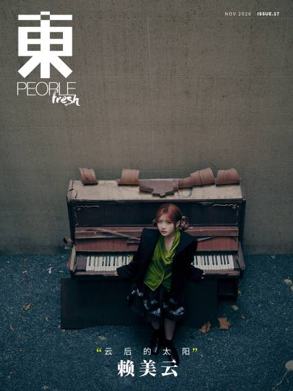
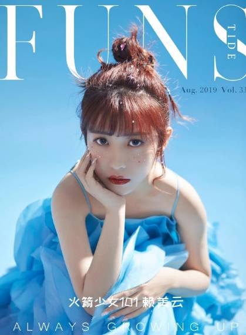
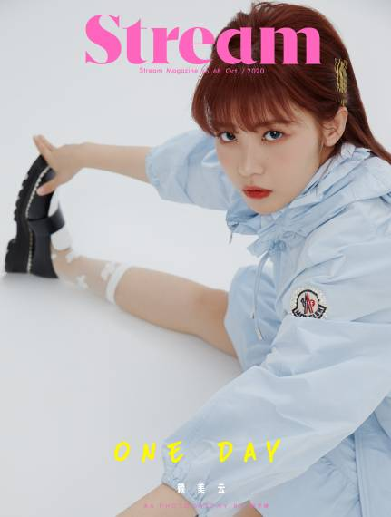

赖美云
1998年7月7日出生于广东省深圳市，中国流行乐女歌手。
重要事件
- 2015年8月10日，赖美云随SING发行首支单曲《青春的告白》，正式出道；
- 2016年1月9日，随组合出席第一届繁星年度颁奖盛典，并获得年度先锋新人组合奖；
- 2017年8月，随组合出演真人CG科幻青春偶像剧《快乐酷宝3》；9月26日，随组合EDM曲风的单曲《寄明月》；29日，随组合受邀出席第一届亚洲音乐盛典，获得年度人气飙升女团奖。
- 2018年4月21日起，参加腾讯视频女团青春成长节目《创造101》，最终以第6名的成绩成功加入女子演唱组合“火箭少女101”；
- 2018年7月24日，随火箭少女101为电影《西虹市首富》演唱歌曲《卡路里》；8月18日，随火箭少女101发行首张EP《撞》；12月31日，随火箭少女101参加湖南卫视跨年演唱会；
- 2019年1月12日，随火箭少女101举行“2019火箭少女101飞行演唱会”；7月12日，发布首支个人单曲《下雨了》；11月22日，发布第二支个人单曲《不渺小》 ；
- 2020年6月23日，其所属限定组合“火箭少女101”正式解散；24日，成立了个人工作室，并发布个人单曲《女孩与王冠》 。
- 2021年1月7日，发布个人单曲《可爱暴击》。
获奖记录
- 2018-08-29 2018年度华人歌曲音乐盛典 年度最受欢迎乐队及组合奖
- 2018-08-19 2018年度亚洲新歌榜 最受欢迎团体奖
- 2018-02-01 酷狗直播年度盛典 最具突破人气组合奖
- 2018-01-30 NOW直播年度之星 最佳突破组合奖
- 2017-11-29 第一届亚洲音乐盛典 年度人气飙升女团奖
- 2016-03-28 第二届酷音乐亚洲盛典酷音乐流行榜 年度最热彩铃奖
- 2016-01-09 第一届繁星年度颁奖盛典 年度先锋新人组合奖
主要作品
| 歌曲名称 | 发行日期 | 歌曲简介 |
|---|
| 暂停营业中 | 2021-12-15 | 电视剧《小敏家》插曲 |
| 星合 | 2021-10-26 | - |
| 千年一叹 | 2021-10-22 | - |
| 明月几时 | 2021-10-20 | 《决战！平安京》花鸟卷典藏皮肤「明月几时」同名主题曲。 |
| 柴米油盐again | 021-10-9 | 《萌妻食神之再结良缘》动画片头曲 |
| 幻想 | 2021-9-16 | - |
| 甜甜柚子糖 | 2021-9-14 | 《舍我其谁》电视剧插曲 |
| 听北京说 | 2021-9-6 | - |
| 心的舞步 | 2021-8-16 | 《叶罗丽x冰莲花》主题曲 |
| 铁血丹心 | 2021-6-7 | 电影 《射雕英雄传之降龙十八掌》主题曲 |
杂志写真
|  |
|  |
|  |
111111111111111111111111111111111111111111111111111
人物评价
赖美云有着甜美的酒窝和笑容，率真的性格，永远笑容满面，正能量满满，就像吃着可爱长大的一样。赖美云在女团竞演节目《创造101》中彻底发挥出了御姐本色，主动照顾队友，协调团队，十分暖心 。（网易娱乐评）
在女团竞演节目《创造101》中，赖美云一登场便给观众留下了美好的初印象，一身红白国风纱裙，双丸子头造型。在节目等级评价时，赖美云与组合成员表演的《红昭愿》中国风舞台得到导师的一致好评，赖美云也展现出了强劲的vocal实力。随后在节目的首场竞演中，赖美云与队友以一首《爱你》获得了创始人们的高度认可，她头戴一双白色兔耳朵，一出场便萌翻观众，领唱更是惊艳，用实力唱功镇住了全场，非常有辨识度的招牌式甜美笑容俘获了现场创始人们的心，她的活力元气也感染了女团创始人们。（网易娱乐评）